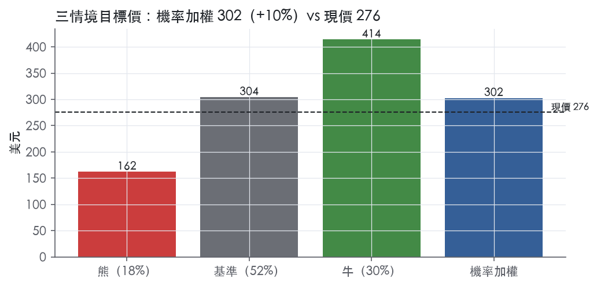
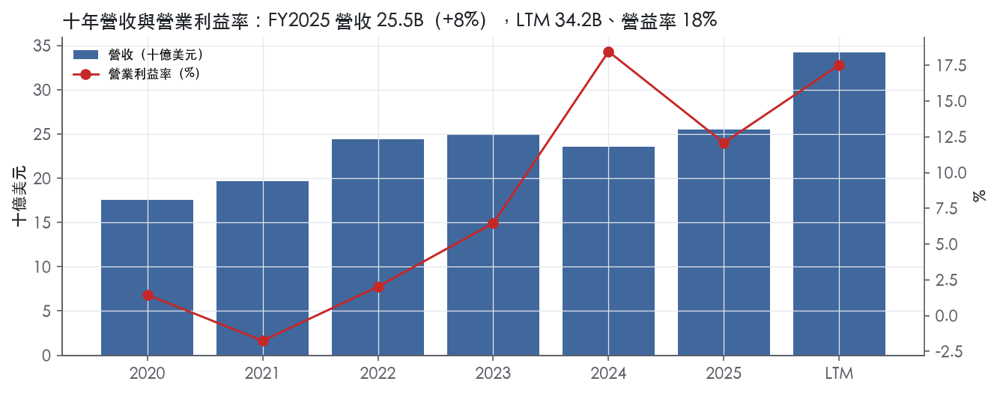
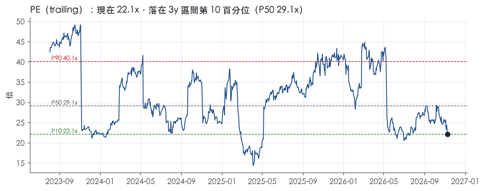
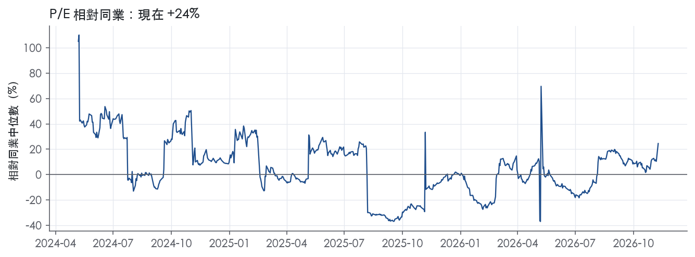
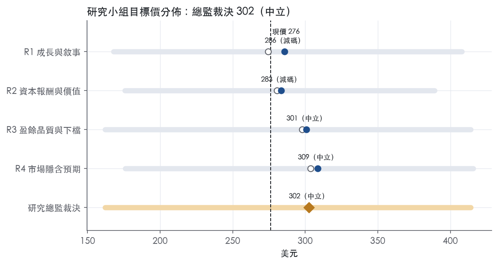

評等總表 › 公用事業 › CEG
盈餘真實、倍數持平，賣出轉中性｜評等 中立｜目標價 302
| 報告日 | 評等 | 目標價 | 當時股價 | 超額報酬 |
|---|---|---|---|---|
| 2026-11-09 | 中立 | 302 | 276 | +0.3% |
| 2026-10-30 | 賣出 | 238 | 262 | -18.7% |
| 快評 | 動作 | 結論 |
|---|---|---|
| 2026-11-09 | 提前重開研究小組 | 獲利遠高於預測，賣出論點受損 |
| 評等 | 中立 |
| 12 個月目標價 | 302 美元 |
| 現價 | 276.09 美元（2026-11-09） |
| 預期報酬 | 股價 +9.5%＋股息 0.6%＝總報酬 +10.1%；同業籃門檻 9.9%，超額 +0.3% |
| 估值方法 | P/E 21.0x，套在第 5–8 季的EPS（也就是一年後的未來四季） |
| 三情境 | 熊 162／基準 304／牛 414 |
| 研究流程 | 四位研究員兩輪辯論＋研究總監裁決 |
| 資料來源 | SEC EDGAR XBRL、Tiingo、FRED（全免費） |
盈餘真實、倍數持平，賣出轉中性（研究總監裁決，四位研究員兩輪辯論後）
評等 中立｜12 個月目標價 302 美元（總監三情境機率加權 312 與研究員中位數 293 各半）｜現價 276.09（2026-11-09）
預期報酬：股價 +9.5%＋股息 0.6%＝總報酬 +10.1%。同業籃門檻 9.9%，超額 +0.3%。
估值方法：P/E 21.0x，套在第 5–8 季的EPS（也就是一年後的未來四季）。三情境：熊 162（18%）／基準 304（52%）／牛 414（30%）。
什麼會讓研究總監改變看法：FY2027調整後EPS指引中點高於12.80且FERC共置裁決保留既有安排，轉看多；FY2027Q1營收低於11.12B且PJM容量價回落、或Crane延至2028年後，轉看空。
| 過去四季（實際，FY2026Q3） | 未來四季 | 第 5–8 季 | 第 9–12 季 | |
|---|---|---|---|---|
| 營收（B） | 34.2B | 38.0B | 39.9B | 42.3B |
| 營收成長 | 37.9% | 11.0% | 5.0% | 6.0% |
| 營業利益率 | 17.5% | 19.0% | 19.5% | 19.5% |
| EPS（美元） | 12.48 | 13.18 | 14.48 | 15.62 |
| EPS 成長 | 43.0% | 5.6% | 9.9% | 7.8% |
| 每股股息（美元） | 0.50 | 0.50 | 0.50 | 0.50 |
| P/E（現價） | 22.1x | 21.0x | 19.1x | 17.7x |
| 股息殖利率（現價） | 0.6% | 0.2% | 0.2% | 0.2% |
過去四季為申報數字；預測為研究總監的假設、程式計算。倍數與殖利率都用現價計算，用來看現價對應各期獲利的高低。
| 項目 | 上次（2026-11-01） | 這次（2026-11-10） | 變動 |
|---|---|---|---|
| 評等 | 賣出 | 中立 | 變動 |
| 機率加權目標價（美元） | 238 | 302 | +27.2% |
| 超額報酬 | -18.7% | 0.3% | +19.0 pp |
| 目標倍數 | 26x | 21x | — |
| 未來四季營收成長 | 8.0% | 11.0% | +3.0 pp |
| 未來四季營益率 | 13.7% | 19.0% | +5.3 pp |
| 未來四季 EPS（美元） | 7.47 | 13.18 | +76.3% |
| 熊／基準／牛機率 | 20／52／28 | 18／52／30 | — |
程式計算；「未來四季」各自從當次報告的資料起點算。研究總監逐點說明見第八章「與上次報告比較」。
| 情境 | 機率（歷史） | 故事 | 未來四季營收成長 | 第 5–8 季營益率 | 倍數 | 目標價 | 股價漲跌 |
|---|---|---|---|---|---|---|---|
| 熊 | 18%（16%） | 風險表第3條PJM容量規則改寫與共置裁決不利，疊加第5條資料中心長約停簽與本行下行路徑；第1條PTC回補與20年長約托住營益率17%；回購停止，被當一般IPP定價 | 3.0% | 17.0% | 16.0x | 162 | -41.3% |
| 基準 | 52%（52%） | Calpine併表基期FY2027Q1退場、營收回到中個位數，整合成本與攤銷退場撐住19.5%營益率，小額回購去槓桿優先，倍數等於市場持平 | 11.0% | 19.5% | 21.0x | 304 | 10.2% |
| 牛 | 30%（32%） | FERC裁決保住共置經濟性、再簽超大型長約、Crane 2027如期重啟、新回購授權；倍數用R3絕對值24x（P50–P75之間、不到P75 26.5x），與熊的絕對值16x同一處理；長約與重啟帶資本支出，取R3的15% | 14.0% | 21.5% | 24.0x | 414 | 50.0% |
目標價由程式依研究總監的驅動與倍數計算；機率由研究總監給定。括號內是歷史頻率：把這檔股票過去十年 12 個月報酬的波動形狀，置中在基準情境，結果落在各情境附近的比例。

四位研究員用不同方法各自估值，回應研究總監的質疑後交出第二輪，最後由總監逐點裁決。各研究員的主張見第七章，裁決理由見第八章，完整論證見《研究底稿》。
| 立場（一輪→二輪） | 加權目標價（一輪→二輪） | 評等（一輪→二輪） | 第二輪倍數 | 熊～牛目標價 | |
|---|---|---|---|---|---|
| R1 成長與敘事 | 看空→看空 | 274→286 | 減碼→減碼 | 19.0x | 168～408 |
| R2 資本報酬與價值 | 看空→看空 | 281→283 | 減碼→減碼 | 21.0x | 176～389 |
| R3 盈餘品質與下檔 | 中性→中性 | 298→301 | 中立→中立 | 20.0x | 162～414 |
| R4 市場隱含預期 | 中性→中性 | 304→309 | 中立→中立 | 20.0x | 176～416 |
| 研究總監裁決 | 中性 | 302 | 中立 | 21.0x | 162～414 |
目標價由程式依各自的驅動與倍數計算；評等＝機率加權總報酬 − 同業籃門檻。
Constellation Energy 是全美最大民營發電商，也是全美最大核能發電公司，核能、天然氣、地熱、水力、風力與太陽能合計裝置容量約 55 GW，發電規模相當於供應 2,700 萬戶住家、約佔全美清潔能源的 10%¹。公司同時經營零售電力與天然氣供應業務，服務全美約 250 萬個客戶帳戶，其中包含 80% 的 Fortune 100 企業¹。約 70% 的發電資源（含直接持有資產與長期合約取得的容量）位於 PJM 區域內²。公司的核心商業模式是把自有發電組合、電力行銷、燃料採購與商品交易組合在一起，透過批發市場現貨銷售與長期 PPA 雙軌獲利²，2026 年初完成收購 Calpine 後，資產基礎與地理分佈進一步擴大²。
10-K 未以傳統「分部揭露」方式拆分營收比重，僅在風險因子中描述業務線。核心資產是核能發電，公司在風險因子中反覆強調核能容量因子、換料停機、核燃料品質與退役金信託（NDT）基金是財務表現的關鍵變數²。收購 Calpine 後新增天然氣、地熱（Geysers 資產）與電池儲能業務線，公司已開始採用「等效強迫停機率」（EFOF）作為天然氣、燃油與抽蓄水力機組的關鍵營運指標¹。第三季 EFOF 為 5.9%，第二季為 6.2%¹；風能、太陽能與川流式水力的「可再生能源擷取率」第三季為 96.4%、第二季為 96.0%¹。核能機組（含 Salem、South Texas Project 權益發電量）第三季發電量 46,677 GWh，去年同期 46,477 GWh，扣除 Salem 與 STP 後自營核電廠容量因子達 97.2%（去年同期 96.8%）¹。公司正在推動 Crane Clean Energy Center 重啟計畫，需 NRC 安全與環境審查、新運轉執照及 FERC 併網協議，目標 2027 年重啟²³。零售供電業務面對州層級市場開放政策的政治風險，退場或重新管制的立法風險始終存在²。分部間具體營收貢獻比重 10-K 未揭露。
客戶結構分三層：批發市場交易對手、簽署長期 PPA 的工商業大客戶（尤其科技/資料中心業者），以及零售電力與天然氣終端客戶。地理上以 PJM 為核心（約 70% 發電資源落在此區），收購 Calpine 後西部與德州（ERCOT）地區曝險上升，公司在風險因子中特別點名西部與德州資產（含 Geysers 地熱資產）面臨乾旱與用水限制風險²。通路上，公司透過批發現貨市場銷售未被 PPA 覆蓋的發電量，同時利用零售業務對沖發電產出²。近期資料中心與 AI 相關用電需求是公司重點強調的客戶成長來源，體現在與科技公司簽署的長期 PPA 與零售供電合約上²。信用面，截至 2025 年底公司約 26%、8%、13% 的可用信用額度分別來自歐洲、加拿大與亞洲銀行，顯示融資通路具一定國際分散度²。
FY2025Q4（2025-12-31）：營收 6.07B，年增 12.9%，營益率 9.8%，EBITDA 1.25B【判，取自資料包】。 FY2026Q1（2026-03-31）：營收因 Calpine 併入大幅跳升至 11.12B，年增 63.8%，營益率 21.0%，EBITDA 3.53B；總債務同步躍升至 22.47B，反映併購後資本結構變化【判，取自資料包】。 FY2026Q2（2026-06-30）：GAAP 淨利為每股 1.42 美元，較 2025 年同期每股 2.67 美元下滑；調整後（非 GAAP）營業每股盈餘為 2.55 美元，較去年同期 1.91 美元成長³。當季上調全年調整後營業每股盈餘指引至 11.50–12.50 美元³。核能機組（含 Salem、STP）發電量 44,160 GWh，低於去年同期 45,170 GWh，扣除 Salem、STP 後容量因子 93.0%（去年同期 94.8%）³。 FY2026Q3（2026-09-30）：GAAP 淨利每股 5.19 美元，調整後營業每股盈餘 5.06 美元，較去年同期 3.04 美元明顯成長¹。公司將全年調整後營業每股盈餘指引中點上調並收窄至 12.50–12.80 美元區間¹。調整後盈餘成長主要反映「有利的市場與投資組合條件以及 Calpine 併入貢獻，部分被不利的利息與核電生產稅抵免（PTC）投資組合因素抵銷」¹。該季營收 9.55B，年增 45.4%，營益率 26.1%，EBITDA 3.02B【判，取自資料包】。
公司管理層將成長引擎歸納為三條主線：核能增容（uprate）、新建/併購清潔發電資產、以及與大型用電客戶簽署長期 PPA 鎖定資料中心與 AI 需求²。本季具體案例包括：與 Amazon 簽署 20 年、690 MW PPA 支持 Calvert Cliffs Clean Energy Center 逾 3B 美元的設施升級與 190 MW 增容計畫，預計 2030–2032 年間上線¹；與 Google 簽署 20 年 PPA，支持伊利諾、賓州、紐澤西 11 座核電機組逾 4.3B 美元投資，新增約 890 MW 增量產能，首座增容預計 2028 年完成，另有 15 年、2,700 MW 的金融能源跟隨協議¹；美國能源部（DOE）就最高 5.0B 美元的核能增容無擔保貸款發出有條件承諾，30 年期、利率為同期美國公債加 0.375% 利差¹；新推出「Peak+」整合方案，結合新增發電容量、需量反應與能源產品，首筆交易為 20 年、270 MW 合約¹；同意以 715M 美元收購 Rhode Island State Energy Center（609 MW 天然氣複循環機組）¹。上一季另完成 920 MW 長期 PPA 簽署（含與 Walmart 的 176 MW 協議，支援 Dresden Clean Energy Center 30 MW 增容）、同意以 860M 美元出售 Brazos Valley Energy Center 以滿足 Calpine 併購的監管承諾、並為紐約兩座核電機組申請延長執照至 2049 年³。公司的敘事邏輯清楚：用現有核能資產的增容與延壽作為低風險成長引擎，疊加資料中心/AI 驅動的長期 PPA 需求鎖定現金流，再用 Calpine 併購擴大天然氣與地熱基礎來補足尖峰與彈性供給缺口。這套「核能為核心、PPA 鎖長約、政府貸款降資金成本」的組合在短期內確實支撐了調整後 EPS 連續上調指引，但 Calpine 整合成本、核電 PTC 政策不確定性與利率環境是觀察報表品質時需要持續追蹤的雜訊項。長期來看，公司成長故事高度依賴資料中心需求是否如市場預期般持續擴張，這點 10-K 本身也列為風險因子而非確定性假設。

CEG 目前評為「無」護城河：核能機組有真實的成本優勢和執照稀缺性，但公司是批發電價的接受者，有紀錄期間的 ROIC 平均沒有超過資本成本，我們沒有把握 ROIC 能中期持續高於資本成本。趨勢判為「變寬」，因為長期 PPA 與增容投資正在把部分商品價格曝險轉成合約現金流，但這個轉變還沒有在報酬率上留下足夠長的紀錄。
成本優勢是最主要的來源：公司寫明，核能容量因子下降時必須改用天然氣與燃油機組或外購電力，而這些來源的發電成本通常高於自家核電站⁴。核電在調度順序排在前段，由天然氣邊際機組定價時，核電可以賺取價差，這是結構性的成本位置。
無形資產（執照與租約）是第二個來源：核電運轉依賴 NRC 執照，水力機組需要 FERC 核發運轉執照，若執照未獲續發，折舊會加速、退役成本會提前⁴。Geysers 地熱蒸汽田許多租約已超過 30 年仍有效，聯邦租約可續期至最長 50 年⁴。新進者要取得同等規模的核能與地熱執照，時間與審查門檻都極高，構成供給端的進入障礙。
零售業務不列入任何優勢類別：公司自承零售業務的進入障礙可能很低，競爭者在低價、低波動期間會積極搶市占⁴。
數字不支持寬或窄護城河，這是評級壓在「無」的主因。ROIC 十年平均 9.3%，低於資本成本代理值 9.9%，平均差距 -0.6%；有資料的 4 年中只有 2 年高於資本成本。ROIC 標準差 6.3%，區間 1.8% 至 18.8%；營業利益率十年平均 6.5%、標準差 6.9%、最低 -1.8%。這種波動和商品型發電商一致，不像有定價權的企業。FCF 利潤率十年平均 -14.0%、最低 -31.0%，直到最新一年才轉正到 5.0%。
數字和我們的成本優勢主張有衝突：成本優勢決定 CEG 在同業間的相對位置，但絕對報酬仍隨電價與天然氣價格起伏，最新 ROIC 10.6% 只略高於 9.9% 的資本成本。Calpine 併購是另一個不利因素：公司預期在期初資產負債表認列商譽⁴，總債務也升至 22.47B 美元。投入資本墊高後，ROIC 短期會被稀釋。ROIC 序列只有 4 年，樣本不足以證明跨週期的超額報酬，這也是不給「窄」的原因之一。
最大的侵蝕力來自市場設計與監管：約 70% 的發電資源位於 PJM，價格上限、要求新增大型負載向新電源購電、偏向新資源的政策，都可能讓既有資源提前退場⁴。若公司不再通過 FERC 的市場定價授權測試，就得改以成本基礎費率售電⁴。既有核電適用的 PTC，其存續、期間與價值都可能受立法影響⁴。
技術面，儲能、先進核能與先進地熱可能大幅增加潔淨基載供給並壓低電價，AI 也可能降低進入障礙⁴。合約面，PPA 到期後的續約價或現貨價可能大幅低於原合約⁴。部分時段供給超過需求時會出現負電價，造成核電等基載機組的營收損失⁴。這些多是政策與定價權的外生變數，公司無法靠營運效率抵銷，這正是成本優勢無法轉化成護城河的關鍵。
目標倍數相對同業應持平，不給溢價。核能成本位置足以讓 CEG 與同業平起平坐，但 ROIC 長期未穩定高於資本成本、利潤率標準差大，加上 Calpine 商譽與債務墊高投入資本，都不支持拉長超額報酬期。若長約占比提升後 ROIC 持續站上資本成本，且 PJM 改革與 PTC 的不利結果沒有落地，再評估上調為「窄」並給予溢價。
| 指標 | 最新 | 十年平均 | 標準差 | 最低 | 最高 |
|---|---|---|---|---|---|
| ROIC | 10.6% | 9.3% | 6.3% | 1.8% | 18.8% |
| 營業利益率 | 12.1% | 6.5% | 6.9% | -1.8% | 18.5% |
| FCF 利潤率 | 5.0% | -14.0% | 11.3% | -31.0% | 5.0% |
| ROE | 16.8% | 11.9% | 12.3% | -1.6% | 31.1% |
程式計算。資本成本代理值（10 年債＋5%）：9.9%；ROIC 平均減資本成本：-0.6%；ROIC 有資料的 4 年中，高於資本成本 2 年。
LTM 營業現金流／淨利為 1.32x，綠燈，顯示本期淨利有現金支撐。但近三年平均為 -0.70x，主因 FY2022–FY2023 CFO 為負值（-2.35B、-5.30B）而淨利卻轉正，屬於歷史期間商品避險與營運資金劇烈波動造成的扭曲，不是近期現象。應計比率 LTM 為 -1.4%，綠燈，意味本期盈餘品質靠現金、不是靠應計推升。FCF／淨利 LTM 僅 0.31x，紅燈，近三年平均更是 -1.85x，這是程式標出的唯一紅旗。資本支出／營收十年來持續走高，FY2025 達 11.5%，加上 Calpine 於 2026 年 1 月併入後總債務從 FY2025Q4 的 8.99B 跳升到 FY2026Q1 的 22.47B，顯示資本支出與併購同步擴大，壓低 FCF 但不代表盈餘造假。
本季 GAAP 淨利 1,835M、每股 5.19，反而高於調整後（非 GAAP）營業盈餘 1,792M、每股 5.06¹，與一般公司「非 GAAP 高於 GAAP」的常態相反，值得特別留意。主要調整項目：未實現公允價值變動損益（127M 收益、每股 -0.36）¹；除役相關活動損益（56M 損失、每股 0.16）¹；收購商品合約攤銷（39M、每股 0.11，源自 Calpine 收購的非現金公允價值攤銷）¹；Calpine 合併與整合成本（73M、每股 0.20）¹；所得稅相關調整（-108M、每股 -0.30）¹。我認為 Calpine 合併整合成本屬於可解釋的一次性真實現金支出，應該在估值時加回但要提醒會重複發生到整合完成為止；除役信託基金損益與公允價值避險損益屬於會計口徑的非現金波動，不代表核心經營績效，排除合理；收購商品合約攤銷是純會計性的非現金項目，排除也合理；但所得稅調整金額達每股 -0.30，振幅偏大，建議讀者留意其對 EPS 的扭曲幅度。
淨負債／EBITDA LTM 為 2.38x，黃燈，但近三年平均僅 1.29x、十年平均 1.49x，顯示目前槓桿偏高是近期事件推升，不是結構性惡化。總債務從 FY2025Q4 的 8.99B 跳增至 FY2026Q1 的 22.47B，時間點正好對應 2026 年 1 月完成的 Calpine 收購⁵，可視為一次性併購融資而非營運現金流惡化造成的舉債。利息保障倍數 LTM 6.93x，黃燈，低於綠燈門檻 8x，但遠高於十年平均 3.32x，顯示付息能力仍優於公司歷史常態，只是未達最嚴格標準。稀釋股數年變動為 -1.7%，綠燈，代表公司持續淨減少股數而非稀釋，這點與新聞稿中提到「持續積極的股票回購步伐」一致¹。（股利＋回購）／淨利 LTM 僅 13.3%，近三年平均卻達 53.5%，黃燈，落差主因 FY2023 淨利基期偏低（1.62B）使比率分母縮小、比率被放大，屬於分母效應而非股東回饋政策突然轉趨激進。公司資本配置重心已明顯轉向成長性投資：與 Amazon 的 20 年 PPA 將帶動 Calvert Cliffs 逾 3B 美元基礎設施投資¹，與 Google 的合作將帶動逾 4.3B 美元核能升級投資¹，另外還簽署了最高 5.0B 美元的 DOE 有條件貸款承諾支持核能升級¹。這些都是確定會持續吃掉自由現金流的真實資本支出，不是會計操作。
自由現金流／淨利紅燈（LTM 0.31x，近三年平均 -1.85x）：這是程式標出的唯一紅旗。根本原因是資本支出／營收十年來從 FY2020 的 9.9% 一路爬升到 FY2025 的 11.5%，加上 Calpine 併購後總債務暴增、資產規模與投資計畫同步放大。公司自己在新聞稿中揭露了逾 3B 美元 Calvert Cliffs 投資與逾 4.3B 美元核能升級投資的具體規劃¹，也正在推進 Crane 核電廠重啟，資本化金額若未獲核准可能面臨減損風險⁵。我判斷這是「真實但一次性／結構性放大的成長資本支出」，不是盈餘灌水，但確實代表公司短中期內自由現金流會持續低於淨利，應在估值模型中反映，不宜簡單套用淨利推算自由現金流。
淨負債／EBITDA 黃燈、利息保障倍數黃燈：兩者都源自 Calpine 併購融資，時間點明確、金額可追蹤（總債務從 8.99B 跳到 22.47B），屬於一次性併購槓桿，非營運現金流惡化造成，可解釋。
（股利＋回購）／淨利 3 年均值黃燈：主因 FY2023 淨利基期低（1.62B），分母效應放大比率，LTM 數字（13.3%）正常，可解釋。
應收帳款成長－營收成長 FY2025 +6.4pp 黃燈：10-K 未單獨揭露應收帳款成長細節，無法用原文佐證具體原因，僅能判斷落在黃燈區間（≤15pp），尚未構成營運資金吃掉盈餘的明確證據，建議後續季度追蹤是否持續擴大。
估值應以 GAAP 淨利為主軸，對非 GAAP 調整後數字只採信 Calpine 整合成本以外的項目做加回，因為本季非 GAAP反而低於 GAAP、調整方向並非單向美化盈餘。自由現金流／淨利偏低是真實成長資本支出與併購槓桿造成，估值模型應直接用公司揭露的資本支出規劃（Calvert Cliffs 逾 3B、Google 相關逾 4.3B）去反映未來 FCF 曲線，而不是對 GAAP 盈餘打折。目前淨負債／EBITDA 2.38x 雖未過熊，但併購後槓桿已明顯墊高，若估值使用 EV/EBITDA 倍數，應對照同業槓桿水位，避免給予與低槓桿十年均值（1.49x）時期相同的乘數。
| 項目 | LTM | 近三年 | 十年 | 燈號 | 規則 |
|---|---|---|---|---|---|
| 營業現金流／淨利 | 1.32x | -0.70x | 3.35x | 綠 | ≥1.00x 綠、<0.80x 紅 |
| 自由現金流／淨利 | 0.31x | -1.85x | 5.13x | 紅 | ≥0.90x 綠、<0.60x 紅 |
| 應計比率（(淨利−CFO)／平均總資產） | -1.4% | 7.6% | 6.8% | 綠 | ≤0.0% 綠、>5.0% 紅 |
| SBC／營收 | — | 1.2% | 0.7% | 綠 | ≤3.0% 綠、>8.0% 紅 |
| 淨負債／EBITDA | 2.38x | 1.29x | 1.49x | 黃 | ≤1.50x 綠、>3.00x 紅 |
| 利息保障倍數（營業利益／利息） | 6.93x | 6.13x | 3.32x | 黃 | ≥8.00x 綠、<3.00x 紅 |
| 稀釋股數年變動 | -1.7% | -1.5% | -1.5% | 綠 | ≤0.0% 綠、>3.0% 紅 |
| （股利＋回購）／淨利 | 13.3% | 53.5% | 11.2% | 黃 | ≥50.0% 綠、<0.0% 紅 |
| 應收帳款成長 − 營收成長（FY2025） | +6.4pp | — | — | 黃 | ≤5pp 綠、>15pp 紅 |
| 存貨成長 − 營收成長（FY2025） | +0.2pp | — | — | 綠 | ≤5pp 綠、>15pp 紅 |
程式計算；燈號以 LTM（無則近三年平均）判定。
| 風險 | 觸發指標（看什麼數字、在哪裡看） | 對 EPS 的影響方向與粗略幅度 | 未來 12 個月發生機率（高／中／低） | 出處 |
|---|---|---|---|---|
| 核能 PTC / 州補貼（ZEC、CMC）政策轉弱或電價上漲使 PTC 自動退場 | 財報「Nuclear PTC revenue」與「State-sponsored programs net revenue」兩行（季報 MD&A）；PJM／ComEd／紐約電力現貨價是否站上 PTC 門檻 | 負向、大：2025 年 PTC 收入從 2.08B 降到 320M，年減 84.6%（2025 vs 2024）⁵ | 高 | 10-K 年報 FY2025 Item 7（管理層討論與分析） |
| Calpine 併購整合與資本結構風險（商譽減損、負債大增） | 季度總債務（bs.total_debt）、Calpine Merger and Integration Costs 揭露金額、年度商譽減損測試結果 | 負向、中：總債務由 FY2025Q4 的 8.99B 跳升至 FY2026Q1 的 22.47B；2026Q3 單季整合成本稅後 73M、每股 0.20 | 中 | ＋¹ |
| PJM 容量市場規則改寫（FERC show-cause 裁決、co-located load 新規） | FERC 2026 年合規申報內容、PJM 容量拍賣結果（EMAAC／ComEd 容量價）公告 | 方向不確定、中：EMAAC 容量價 2025 年已漲至 179.79 美元/MW-day（+246.5%），規則改寫可能逆轉此趨勢⁵ | 中 | 10-K 年報 FY2025 Item 1A（風險因素） |
| 核燃料／鈈濃縮鈾供應鏈受俄烏制裁衝擊 | 美國對俄羅斯濃縮鈾進口禁令執行狀況、公司燃料庫存天數揭露 | 負向、小至中（未量化） | 低 | 10-K 年報 FY2025 Item 1A（風險因素） |
| 資料中心 PPA 需求不如預期放緩，Amazon／Google／Meta 等長約客戶用電需求低於簽約規劃 | 新增 PPA 容量（MW）公告節奏、既有 PPA 客戶是否有延遲或取消公告 | 負向、中（未量化，公司未揭露單一客戶占比） | 低 | 研究判斷 |
PTC／州補貼退場是目前最大、最可監測的盈餘風險。公司 2025 年核能 PTC 收入從 2.08B 美元驟減至 320M 美元，年減 84.6%，是當年淨利下滑 1,430M 美元（從 3,749M 降至 2,319M）的主要單一原因之一⁵。PTC 機制本身設計成「電價越高，抵免越少」——當年度毛收入落在每 MWh 25–43.75 美元（2024）或 26–44.75 美元（2025）區間時會逐步退場⁵，而 2025 年 PJM West、ComEd、紐約的日前電價已經分別來到 50.19、36.62、56.31 美元/MWh⁵，意味電價維持高位本身就會持續侵蝕 PTC。這條風險每季都能從財報 MD&A 的「Nuclear PTC revenue」一行直接驗證，是最乾淨的監測指標。
Calpine 併購把資產負債表槓桿和整合成本風險帶進公司。總債務從 FY2025Q4 的 8.99B 美元跳升到 FY2026Q1 的 22.47B 美元，同時 2026 年第三季單季 Calpine 整合成本稅後 73M 美元、每股影響 0.20 美元，高於去年同期的 28M 美元、每股 0.09 美元¹，顯示整合成本仍在爬升而非收斂。10-K 本身也點名「Calpine 將為資產負債表增加大量商譽，須依公司政策進行減損測試」⁵，一旦區域發電組合的現金流假設（商品價格、客戶流失率）不如預期，商譽減損會一次性打穿 EPS。
PJM 市場規則改寫方向未定，是雙面風險。FERC 已在 2025 年 12 月裁定 PJM 現行針對 co-located load（即資料中心直連發電資產）的關稅條款「不公正、不合理」，要求 PJM 於 2026 年提出合規申報，同時國家能源優勢委員會也在推動容量拍賣改革以增加供給、保護住宅用戶並向資料中心分攤成本⁴。若最終規則壓低容量價格或限制 CEG 向資料中心收取的溢價，公司近兩年靠容量價格上漲（EMAAC 容量價年增 246.5%）貢獻的營收成長會逆轉；若規則反而鞏固既有發電商的稀缺性溢價，則是正面。這條風險的方向性不確定，但觸發點明確——看 2026 年 FERC 合規申報與 PJM 拍賣結果公告即可。
俄烏衝突對核燃料供應鏈的影響屬於尾部風險、機率低。美國已自 2024 年 8 月起禁止進口俄羅斯濃縮鈾（除 DOE 核准豁免外），俄羅斯也在 2024 年 11 月對出口美國的濃縮鈾實施限制並要求個案出口許可⁴。公司表示已與多元供應商簽訂長期合約並擴大燃料庫存以降低風險⁴，10-K 未揭露具體庫存天數或成本影響金額，無法量化衝擊幅度。
資料中心需求放緩是公司成長敘事的核心假設，但缺乏可驗證的監測指標。公司近期與 Amazon（690 MW）、Google（890 MW 增容＋2,700 MW 財務能源跟隨協議）簽署的長約，是支撐目前估值溢價的主要故事¹，但這些都是 20 年期合約，短期內不會因需求波動而立即反映在財報上，也沒有單一客戶營收占比揭露可供監測，因此機率判定為低，但一旦市場開始質疑 AI 資本支出週期，CEG 的倍數（目前 EV/EBITDA 12.6x，處於 5 年分位 34.4%）可能比財報本身更快反應。
現價 276.09 對應 trailing（過去四季）P/E 22.1x、EV/EBITDA 12.6x、EV/EBITA 19.9x、EV/Sales 3.5x、FCF 殖利率 1.4%。主要估值倍數 P/E 現在 22.1x，落在3 年區間第 10 百分位（P10／P50／P90 = 22.1x／29.1x／40.1x）。

把程式的機械基準預測放到現價下，市場付的前瞻倍數是：P/E（未來四季） 21.1x、P/E（第 5–8 季） 18.7x。反推 DCF 顯示市價隱含未來五年營收年成長 16.3%（WACC 9.0%、終值成長 3.0%、FCF 利潤率 9.7%，SBC 不加回）。
| 倍數 | 現在 | 3 年 P10 | 3 年 P50 | 3 年 P90 | 現在分位 | 全期 P50 |
|---|---|---|---|---|---|---|
| P/E | 22.1x | 22.1x | 29.1x | 40.1x | 10.1% | 30.8x |
| EV/EBITDA | 12.6x | 11.3x | 15.3x | 18.4x | 18.5% | 14.3x |
| EV/EBITA | 20.0x | 22.7x | 27.9x | 34.2x | 6.3% | 29.1x |
| EV/EBIT | 20.1x | 22.8x | 28.4x | 34.4x | 6.3% | 29.8x |
| EV/Sales | 3.5x | 2.5x | 3.8x | 4.5x | 38.7% | 3.1x |
| P/S | 2.9x | 2.2x | 3.2x | 4.3x | 27.8% | 2.8x |
| P/FCF | 73.1x | — | — | — | — | 79.8x |
trailing 倍數（股價 ÷ 過去四季）；分位以每個交易日計算。
同業籃：VST, NRG, TLN, NEE（手動名單（playbooks/peers.yaml））。評等門檻 9.9%：同業「倍數不變下持有一年」的隱含報酬中位數（＝ FCF 殖利率 ×(1＋g)＋g，g 為 5 年營收年複合成長並夾在 −2%～8%），每家夾在 0～15%、P/E 低於 5 倍視為資料可疑而排除，中位數再限制在 10 年債到 10 年債＋5% 之間（同業原始中位數 12.3%）。
| 代號 | 市值 | 5 年營收 CAGR | 營益率 | ROIC | P/E | 5 年 P/E 中位數 | EV/EBITDA | P/FCF | 隱含報酬 |
|---|---|---|---|---|---|---|---|---|---|
| CEG | 97.2B | 7.7% | 17.5% | 10.6% | 22.1x | — | 12.6x | 72.7x | 9.2% |
| VST | 44.8B | 9.2% | 20.6% | 7.3% | 17.8x | — | 10.0x | 17.2x | 14.3% |
| NRG | 20.5B | 27.6% | 7.7% | 10.9% | 16.9x | — | 9.6x | 29.7x | 11.6% |
| TLN | 17.2B | -8.6% | 2.0% | -1.6% | — | — | 52.2x | 43.4x | 0.3% |
| NEE | 181.1B | 8.7% | 31.7% | 6.0% | 22.0x | 25.2x | 18.7x | — | 12.9% |
| 同業中位數 | 8.9% | 14.1% | 6.6% | 17.8x | 25.2x | 14.3x | 29.7x | 9.9% |
全部 trailing，程式以各公司 SEC XBRL 與 Tiingo 行情計算；第一列為本檔。
P/E 相對同業中位數：現在 24.5%，過去 1 年平均 -1.5%、3 年 5.4%、5 年 —；EV/EBITDA 相對同業中位數：現在 -12.4%，過去 1 年平均 -9.7%、3 年 -0.1%、5 年 -13.1%。

事後實現前瞻倍數帶（P/E，2022-05-20..2025-11-14）：P10／P50／P90 = 10.5x／19.0x／31.0x。它是每個交易日的股價除以之後四季實際實現的指標；一年後，今天的第 5–8 季正是那時的未來四季，所以這條帶是 12 個月目標價的同口徑倍數。因為用的是事後實際而非當時預期，過去成長超乎預期的公司這條帶會偏低。
程式的機械基準（成長率從過去四季年增率三年收斂到 6%、利潤率持平）用 事後實現前瞻 P/E P50 估值得到 281（1.7%），市場現行前瞻倍數（現價 ÷ 基準 未來四季指標）一年後持平，套在基準 第 5–8 季指標得到 312。這兩個數字只是參考點，不是本報告的目標價；研究員對這個定價的回應在第七章。
下表是每位研究員第一輪（各自獨立）與第二輪（回應研究總監的質疑後）的結果。目標價全由程式依各自的假設計算。
| 立場（一輪→二輪） | 加權目標價（一輪→二輪） | 評等（一輪→二輪） | 第二輪倍數 | 熊～牛目標價 | |
|---|---|---|---|---|---|
| R1 成長與敘事 | 看空→看空 | 274→286 | 減碼→減碼 | 19.0x | 168～408 |
| R2 資本報酬與價值 | 看空→看空 | 281→283 | 減碼→減碼 | 21.0x | 176～389 |
| R3 盈餘品質與下檔 | 中性→中性 | 298→301 | 中立→中立 | 20.0x | 162～414 |
| R4 市場隱含預期 | 中性→中性 | 304→309 | 中立→中立 | 20.0x | 176～416 |
| 研究總監裁決 | 中性 | 302 | 中立 | 21.0x | 162～414 |
目標價由程式依各自的驅動與倍數計算；評等＝機率加權總報酬 − 同業籃門檻。
分歧度：第一輪 加權目標價 274～304（區間＝現價的 11%）· 倍數 20～21x · 立場 看空×2、中性×2；第二輪 加權目標價 283～309（區間＝現價的 9%）· 倍數 19～21x · 立場 看空×2、中性×2。

| 研究員 | 第二輪主張 | 堅持的理由 |
|---|---|---|
| R1 成長與敘事 | 偏空，倍數19x，取前瞻 P/E 歷史中位數19.0x。 | 營收只成長9%，新增容量都在2028年後，股數不減。 |
| R2 資本報酬與價值 | 偏空，倍數21x，略高於歷史中位數，但不往上移。 | 回購靠賣資產和舉債，不靠自由現金流，不提高每股價值。 |
| R3 盈餘品質與下檔 | 中性，倍數20x；盈餘是真的，回購有限。 | 今天22.1x的分母有雜訊，燃氣占比與槓桿一年內不改善。 |
| R4 市場隱含預期 | 中性，倍數20x；市場對EPS沒錯，錯在營收與現金轉換。 | 一年內併購基期消失，資本支出先於收入，倍數應低於今天。 |
每位研究員的逐條回應與完整論證見《研究底稿》（CEG_研究底稿_2026-11-10.docx）。
| 分歧點 | R1 | R2 | R3 | R4 | 什麼資料會分出勝負 |
|---|---|---|---|---|---|
| 目標倍數 | 19x＝帶 P50 原值；槓桿、FCF、無護城河抵銷帶偏低，利率為輔助理由 | 21x＝P50–P75 偏 P50；部分修正帶偏低，無護城河不再上 | 20x＝P50 略上；今日 22.1x 分母受污染，燃氣占比與槓桿一年內不改善 | 20x；併表基期消失、資本支出先於收入、FERC 共置待決 | 2027-02 的 FY2027 調整後 EPS 指引；FERC 對 PJM 共置合規申報的裁決 |
| 股數年變動 | 0%：找不到每年 2% 的資金 | −1%：Q3 354M，但買回靠 Brazos 860M 與舉債 | −1%：Item 5 剩餘授權 593M、股利目標成長 10%、投資級優先 | −2%：CFO「aggressive」、Q3 354M | FY2026 10-K Item 5 新授權；FY2027Q1 平均稀釋股數對 354M |
| Q5–Q8 營益率 | 19%：整合費與攤銷退場 | 18%：LTM 17.5% 外推 | 19.5%：併入後 Q1 21.0%／Q3 26.1%，留利息緩衝 | 19.5%，y3 20%：LTM 含未併 Calpine 的 9.8% | FY2026Q4、FY2027Q1 GAAP 營益率；整合成本行逐季金額 |
| NTM 營收成長 | 9%：併表只剩一季 | 13%：Q4'26 取代 Q4'25 6.07B，以 Q3 年增 45.4% 為代理 | 10% | 9% | FY2026Q4 營收對 6.07B 的年增率 |
| 稅率 | 27% | 30%（沿用基準） | 27% | 26%＝貼法定 25.4% | FY2026 10-K 全年有效稅率 |
倍數：裁 R2，21x，等於程式的市場持平 21.1x。 四人都承認事後實現前瞻帶 P50 19.0x 偏低（2022–25 年 EPS 從 −0.49 升到 11.89，／FY2024，實現值高於當時預期），差別在修正多少。R1 的 19x 是 P50 原值，拿淨負債／EBITDA 2.38x、FCF／淨利 0.31x（財務體質章）、護城河無來抵銷帶的偏誤，但這三項都已在現價裡，說明的是「現在為何不高」而非「一年後市場為何少付」；他又把 10 年期當輔助理由，依第 7 條不採。R3、R4 的 20x 各列了「一年內會變」的事：併表基期在 FY2027Q1 退出年增率是光學效果，市場知道 Calpine 是 2026 年 1 月併入的；增容資本支出先於 2028 年收入，但對手方是 Amazon、Google 的 20 年合約，資金是 DOE 公債加 0.375% 的 30 年期貸款¹，這在發電商定價裡是加分不是扣分；FERC 共置裁決是雙面的，R3 自己也把它放進牛熊。R3 有一條對我有用：剔除 EPS 雜訊的 EV/EBITDA 對同業折價 −12.4%，幾乎等於 5 年均值 −13.1%（同業表），相對位置沒有被重評。所以一年後市場沒有理由付得比今天少，也沒有個股理由付得比今天多——護城河章要求相對同業持平、不給溢價，淨負債 22.78B與 LTM FCF 1.34B不支持往 P75 26.5x 靠。trailing 3y P50 29.1x是 EPS 由 5.01 跳到 11.89 那段的產物，不是前瞻錨。
股數：裁 R3（R2 同值），−1%。 模型的買回金額按 LTM 持平，股數再縮是免費的，必須有資金來源。R4 的 −2% 只有 CFO 一句「continued aggressive pace」¹；R3 看到 10-K Item 5：2025 年底剩餘授權 593M、股利目標每年成長 10%、維持投資級排在回購前面，加上 Calvert 逾 3B、Google 逾 4.3B 的增容承諾與 RISEC 715M¹，撐不起每年 2%。R1 的 0% 則無視 Q2 360M（R3 引 8-K 2026-08-06）到 Q3 354M¹的實際下降。−1% 是股利付完後的小額回購、去槓桿優先；熊情境回購停止（+0.5%）與基準一致。
營益率：裁 R3，19%／19.5%／19.5%。 R2 的 18%／18%／17.5% 是把 LTM 17.5% 外推，而 LTM 含一季未併 Calpine 的 9.8%與 Q2 含每股 0.94 公允價值損失（R3 引 8-K 2026-08-06）的 7.7%；併入後乾淨的兩季是 21.0%與 26.1%。Q3 的整合成本稅後 73M 與收購合約攤銷 39M 都在 GAAP 營業結果內，會逐季退場¹。本研究部營業利益預測系統性偏低（總監 −2.1%、R2 −4.5%），裁決要反向修；唯一不偏低的 R4（+0.9%）與 R3 的 y1、y2 相同。R4 的 y3 20% 沒有新機制，同 G3 對 R1 的要求，收斂到 y2。19.5% 仍低於乾淨兩季，一半因 Q2 證明避險公允價值會讓 GAAP 大幅擺盪，一半因模型利息按 LTM 持平、少算一季 Calpine 債務利息——這是口徑混用，我寫明，不假裝利潤率本身只有這麼低。
NTM 營收：own，11%。 R2 的機制對：NTM 用 FY2026Q4 取代併入前的 FY2025Q4 6.07B，這一季年增率主要來自 Calpine，其餘三季已含 Calpine 只剩有機成長。但用 Q3 年增 45.4%當 Q4 代理偏高：Q2 年增只有 23.0%，Q4 是 CEG 季節較淡的一季（5.38B）。R1、R4 的 9% 沒拆機制，等於假設含 Calpine 的三季近乎零成長，與 EMAAC 容量價 2025 年漲到 179.79⁵不符。R2 營收勝過基準率只有 51%，本部營收又系統性偏低 0.7%，所以取 R3 的 10% 與 R2 的 13% 之間、偏 R3 的 11%。Q5–Q8 取 R1 的 5%：Google 首座增容 2028、Calvert 2030–32 都在視窗外，Crane 2027 是唯一新增量。
稅率：裁 R1／R3，27%。 法定邊際 25.4% 是地板¹；基準 30% 是三年中位數打到上限，反映 GAAP 有效稅率長期高於法定——除役相關項目在合約抵銷會計下是 100% 有效稅率¹，Q3 又有 −108M 稅務調整。R4 取 26% 太貼法定；R2 沿用 30% 沒論證。
退回的漂移：無。 R1 靠攏比例 49%，但六項修正全部對應我的意見且附證據，點估 256 到 258 幾乎不動，加權上升來自換口徑與熊機率向歷史靠。R2 熊機率 20% 改 22% 是反向移動，程式對照 19%，我不採用但不算漂移。總經偏離：四人 macro_deviations 皆空，全部接受。 R2 熊情境接本行下行路徑（利差 2.30、GDP 0.3）是正確用法；R2、R4 指出本行上行路徑（10 年期 4.60、WTI 72）對 CEG 不利，牛情境改用公司特有驅動、總經沿本行基準，接受。敏感度 10 年期每 +1pp → +16.7%（t 2.4），本行 4.98 持平隱含 0%，與倍數在市場持平一致。
與機械基準不同的驅動：rev_growth_y1 11%（own）；rev_growth_y2 5%（R1）；y3 沿用 6%。op_margin 19%／19.5%／19.5%（R3）。capex_pct_rev 14%（R2／R4）：FY2025 11.5%往上走，但增容投資分佈到 2032 年，Q5–Q8 內不會全部出現。tax_rate 27%（R1／R3）；share_change_pct −1%（R3）。D&A、SBC 沿用基準。
目標倍數 21x，metric eps、horizon q5_q8，錨是事後實現前瞻 P/E 帶 P50 19.0x 與 P75 26.5x 之間、等於市場持平 21.1x：市場一年後對「當時的未來四季」付的倍數和今天一樣。口徑：q5_q8 配前瞻帶，不與 trailing 帶比。相對同業：剔除 TLN 與受管制的 NEE 後，CEG 的 trailing P/E 22.1x、EV/EBITDA 12.6x 都高於 VST（17.8x、10.0x）與 NRG（16.9x、9.6x），溢價對應核能成本位置與 20 年長約占比，護城河章「趨勢變寬」支持維持、「無」不支持擴大。
機率來源：R3 第二輪對照（牛 +46%／熊 −43% → 歷史 29%／17%）與 R2（+45%／−35% → 29%／19%）夾住我的距離，表上 ≥+20% 為 30%、≤−20% 為 19%、≤−30% 為 16%，取 30／52／18，程式精算後若偏離 3pp 以上以歷史為準。牛大於熊與歷史一致，是對本部 22 份報告熊皆大於牛的修正；沒有公司特有理由偏離——FY2027 指引與 FERC 裁決都在期間內但方向未定。
市場對基準 NTM EPS 13.06 付 21.1x、對 Q5–Q8 EPS 14.78 付 18.7x；反推 DCF 要五年營收成長 16.3% 配 9.7% FCF 利潤率。我們認為市場在營收上偏多，但靠營益率、27% 稅率與回購，Q5–Q8 EPS 與基準相去不遠——差距不在盈餘，在現金轉換：LTM FCF 1.34B 對營收 34.25B遠低於反推 DCF 的假設，這是不把倍數推向 P75 的原因。基準情境倍數持平、賺盈餘成長與 0.6% 股息，總報酬在門檻 9.9% 附近；加權超額來自歷史右偏的牛機率。立場中性：若評等為中立，一致；若為加碼，我仍維持中性，因為超額落在本部營業利益絕對誤差中位數 9.8% 之內，且來自分布形狀而非基準情境裡的個股催化劑，升評要等 2027 年 2 月的 FY2027 指引。
程式檢查發現，總監最初裁決的機率加權目標價 317 落在四位研究員第二輪區間 283～309 之外，可能是逐點選邊的拼湊效應。總監複核後決定修正（最終 312）：基準（21x＋19.5%營益率）兩個錨各自獨立、有證據，R1/R2用受污染的LTM外推營益率是同邊偏低，基準高於區間維持。牛情境是疊加：R3的覆寫套在我較有利的基準上、倍數又從24x加到25x，而熊卻用絕對值16x——牛用相對距離、熊用絕對值不一致；牛觸發（長約、Crane）本身帶資本支出，不該用14%。修正：牛倍數回24x、牛資本支出15%，其餘不動。
先拆解 316.73 從哪裡來。 基準 304 已高於四人基準的頂端（R4 295）；牛 431 高於四人的牛（389–416）；熊 162 與最低的 R3 並列；機率 30／52／18 對照歷史 30／53／16，熊還略偏保守。所以超出區間不是機率傾斜，是基準與牛各自站在最高點，再疊加右偏分布。
基準逐驅動檢查。 我取了 R2 的 21x 與 R3／R4 的 19.5% 營益率——沒有任何一位研究員同時持有這兩個值，這是必須正視的「拼湊」。但兩者的機制並不互斥：21x 的錨是市場持平 21.1x 與 EV/EBITDA 對同業折價 −12.4% 等於五年均值，不依賴 R2 的盈餘假設；19.5% 的錨是併入後乾淨兩季 21.0%／26.1%（／FY2026Q3）與整合成本 73M、攤銷 39M 退場¹。R2 的 18% 是把含未併 Calpine 9.8% 與含公允價值損失 7.7% 的 LTM 直接外推，本部營業利益預測又系統性偏低（總監 −2.1%、R2 −4.5%），R1／R2 在同一邊壓低盈餘是有據可指的。對 R4 的比較是混合的：倍數高 1x，但 y2 成長、y3 營益率、股數、稅率我都取得比他保守。基準高於區間 3%，我維持。
牛情境有疊加。 我把 R3 的牛覆寫（營收 14／7／7、營益率 20.5／21.5／21.5、股數 −2%）套在我自己較有利的基準上（資本支出 14%、D&A 10.4%），再把倍數 24x 加到 25x，理由是「維持對我基準 +4x 的距離」；但熊情境我卻保留 R3 的絕對值 16x，不保留距離。牛用相對、熊用絕對，這是不一致的處理。另外牛的觸發是「再簽超大型長約、Crane 如期重啟」，這些正是資本支出先於收入的事件，R3 的牛配 15% 資本支出有道理，我的 14% 是在牛情境裡少算了錢。
修正： 牛熊倍數統一用 R3 的絕對值（24x／16x），牛情境資本支出覆寫為 15%；基準、分歧裁決、機率不動。修正後加權目標價預期仍落在區間頂端附近（基準在頂端是有意的），若程式評等仍為加碼，立場維持中性：超額在本部營業利益絕對誤差中位數 9.8% 之內，升評等 2027-02 的 FY2027 指引。
現價 276.09 → 點估目標價 304 → 機率加權目標價 312 → 目標價 302，差距拆成五段：成長順延 +36 美元（市場現行倍數 21.1x 一年後持平、獲利照機械基準）；倍數差 -2 美元（總監倍數 21.0x vs 市場持平倍數 21.1x，同一機械基準預測）；盈餘差 -6 美元（總監預測的第 5–8 季EPS 0.0B vs 機械基準 0.0B，同一倍數）；情境不對稱 +7 美元（機率加權減點估）；研究小組平均 -9 美元（總監機率加權 312 與研究員第二輪中位數 293 各半）。各段相加等於目標價減現價。本階段未接賣方共識，差距以市場隱含預期為對照。
| 驅動 | 機械基準 | 研究總監 | 差異 |
|---|---|---|---|
| 未來四季營收成長 | 27.3% | 11.0% | -16.3 pp |
| 第 5–8 季營收成長 | 16.6% | 5.0% | -11.6 pp |
| 第 9–12 季營收成長 | 6.0% | 6.0% | ＝ |
| 未來四季營益率 | 17.5% | 19.0% | +1.5 pp |
| 第 5–8 季營益率 | 17.5% | 19.5% | +2.0 pp |
| 第 9–12 季營益率 | 17.5% | 19.5% | +2.0 pp |
| D&A／營收 | 10.4% | 10.4% | ＝ |
| 資本支出／營收 | 13.0% | 14.0% | +1.0 pp |
| SBC／營收 | 0.0% | 0.0% | ＝ |
| 稅率 | 30.0% | 27.0% | -3.0 pp |
| 股數年變動 | 5.0% | -1.0% | -6.0 pp |
研究總監只寫偏移，未寫的沿用基準。
| 期 | 營收 | 成長 | 營益率 | 營業利益 | EBITDA | EBITA | 淨利 | EPS | FCF | 期末淨負債 |
|---|---|---|---|---|---|---|---|---|---|---|
| 未來四季 | 38.0B | 11.0% | 19.0% | 7.2B | 11.2B | 7.3B | 4.6B | 13.18 | 3.3B | 20.1B |
| 第 5–8 季 | 39.9B | 5.0% | 19.5% | 7.8B | 11.9B | 7.8B | 5.1B | 14.48 | 3.6B | 17.1B |
| 第 9–12 季 | 42.3B | 6.0% | 19.5% | 8.3B | 12.6B | 8.3B | 5.4B | 15.62 | 3.9B | 13.8B |
程式依上表的驅動計算；季度用最近四季季節性分攤；不含營運資金變動。
估值方法：P/E 21.0x，套在第 5–8 季的EPS（也就是一年後的未來四季）。研究總監目標倍數的錨：事後實現前瞻P/E帶P50 19.0x與P75 26.5x之間、等於市場持平21.1x：帶因2022–25盈餘超預期偏低故高於P50；護城河無、FCF/淨利0.31x、淨負債22.78B故不往P75。
計算：EPS（第 5–8 季） 14.48 × 21.0x → 點估目標價 304（10.2%）；隱含 P/E（未來四季）23.1x、P/E（第 5–8 季）21.0x、EV/EBITDA（第 5–8 季）10.5x、FCF 殖利率（第 5–8 季）3.4%。
總監三情境機率加權目標價 312，研究員第二輪中位數 293，兩者各半＝目標價 302；預期報酬 股價 +9.5%＋股息 0.6%＝總報酬 +10.1%；減評等門檻 9.9%（同業籃隱含報酬中位數（VST, NRG, TLN, NEE））＝超額報酬 +0.3% → 評等 中立（超額 >+15% 買進、+5～+15% 加碼、±5% 中立、−5～−15% 減碼、<−15% 賣出）。同一份資料重開研究小組，超額約有正負四個百分點的雜訊（一個標準差，二十檔實測）；以此估計，評等落在其他級距的機率約二成。
| 情境 | 機率 | 未來四季成長 | 第 5–8 季成長 | 第 5–8 季營益率 | EPS（第 5–8 季） | 倍數 | 目標價 |
|---|---|---|---|---|---|---|---|
| 熊 | 18% | 3.0% | -3.0% | 17.0% | 10.13 | 16.0x | 162 |
| 基準 | 52% | 11.0% | 5.0% | 19.5% | 14.48 | 21.0x | 304 |
| 牛 | 30% | 14.0% | 7.0% | 21.5% | 17.25 | 24.0x | 414 |
| 主張 | 驗證日 | 看哪個數字 | 門檻 |
|---|---|---|---|
| FY2026調整後營業EPS落在指引區間內 | 2027-02-28 | FY2026 Adjusted (non-GAAP) Operating EPS | >= 12.50 |
| FY2027調整後EPS指引顯示成長 | 2027-02-28 | FY2027 Adjusted Operating EPS指引中點 | > 12.80（高於FY2026指引區間上緣） |
| Q4有併表基期效果但Q3的45.4%不重演 | 2027-02-28 | FY2026Q4營收對FY2025Q4 6.07B年增率 | 25%–45%（假設） |
| 回購持續、股數淨減少 | 2027-05-15 | FY2027Q1平均稀釋股數 | <= 352M（假設） |
| 併入後乾淨季度營益率撐住基準 | 2027-05-15 | FY2027Q1 GAAP營益率 | >= 19% |
到期由程式結算（第 5 階段帳本）。
內文上標數字對應下列公司申報文件；未標上標的分析與判斷，是研究小組的觀點。報告中的每個數字都經程式逐一核對資料包或原文。
| 期 | 營收 | 成長 | 毛利率 | 營益率 | EBITDA | 淨利 | EPS | CFO | FCF | ROIC | 淨負債 | 稀釋股數 |
|---|---|---|---|---|---|---|---|---|---|---|---|---|
| FY2020 | 17.6B | — | — | 1.5% | 3.9B | 0.6B | 0.00 | 0.6B | -1.2B | — | — | 0.0B |
| FY2021 | 19.6B | 11.6% | — | -1.8% | 4.2B | -0.2B | 0.00 | -1.3B | -2.7B | — | 7.4B | 0.0B |
| FY2022 | 24.4B | 24.4% | — | 2.0% | 2.9B | -0.2B | -0.49 | -2.4B | -4.0B | 1.8% | 5.3B | 0.3B |
| FY2023 | 24.9B | 2.0% | — | 6.5% | 4.1B | 1.6B | 5.01 | -5.3B | -7.7B | 5.8% | 8.9B | 0.3B |
| FY2024 | 23.6B | -5.4% | — | 18.5% | 7.1B | 3.7B | 11.89 | -2.5B | -5.0B | 18.8% | 5.4B | 0.3B |
| FY2025 | 25.5B | 8.3% | — | 12.1% | 5.7B | 2.3B | 7.40 | 4.2B | 1.3B | 10.6% | 5.4B | 0.3B |
SEC XBRL；每股數據已依拆股換算到現在股數基準。EBITDA 空白 = 該年無形攤銷在 companyfacts 中缺 tag。
| 期 | 期末 | 推導 | 營收 | 毛利率 | 營益率 | EBITDA | 淨利 | EPS | CFO | FCF | 現金 | 總債務 |
|---|---|---|---|---|---|---|---|---|---|---|---|---|
| FY2023Q4 | 2023-12-31 | Q4 | 5.8B | — | -1.2% | 0.6B | -0.0B | -0.11 | -3.2B | -3.9B | 0.4B | 9.3B |
| FY2024Q1 | 2024-03-31 | 6.2B | — | 13.2% | 1.5B | 0.9B | 2.78 | -0.7B | -1.5B | 0.6B | 10.0B | |
| FY2024Q2 | 2024-06-30 | 5.5B | — | 20.1% | 1.8B | 0.8B | 2.58 | -0.6B | -1.2B | 0.3B | 9.1B | |
| FY2024Q3 | 2024-09-30 | 6.5B | — | 22.4% | 2.1B | 1.2B | 3.82 | -0.1B | -0.7B | 1.8B | 8.4B | |
| FY2024Q4 | 2024-12-31 | Q4 | 5.4B | — | 18.1% | 1.6B | 0.9B | 2.70 | -1.0B | -1.7B | 3.0B | 8.4B |
| FY2025Q1 | 2025-03-31 | 6.8B | — | 6.6% | 1.1B | 0.1B | 0.38 | 0.1B | -0.7B | 1.8B | 8.4B | |
| FY2025Q2 | 2025-06-30 | 6.1B | — | 15.6% | 1.6B | 0.8B | 2.67 | 1.5B | 0.7B | 2.0B | 8.3B | |
| FY2025Q3 | 2025-09-30 | 6.6B | — | 16.5% | 1.7B | 0.9B | 2.97 | 1.8B | 1.5B | 4.0B | 9.0B | |
| FY2025Q4 | 2025-12-31 | Q4 | 6.1B | — | 9.8% | 1.3B | 0.4B | 1.38 | 0.8B | -0.2B | 3.6B | 9.0B |
| FY2026Q1 | 2026-03-31 | 11.1B | — | 21.0% | 3.5B | 1.6B | 4.49 | 0.4B | -0.8B | 0.8B | 22.5B | |
| FY2026Q2 | 2026-06-30 | 7.5B | — | 7.7% | 1.7B | 0.5B | 1.42 | 1.1B | -0.1B | 0.7B | 24.7B | |
| FY2026Q3 | 2026-09-30 | 9.6B | — | 26.1% | 3.0B | 1.8B | 5.19 | 3.4B | 2.5B | 0.6B | 23.4B |
流量項目由 10-Q 的年初至今數拆成單季；Q4 = 年度 − 九個月。
本報告由 equity-desk 多代理系統產出，建置中版本，僅供內部研究與方法驗證，不構成投資建議。所有數字以 datapack.json 為準。